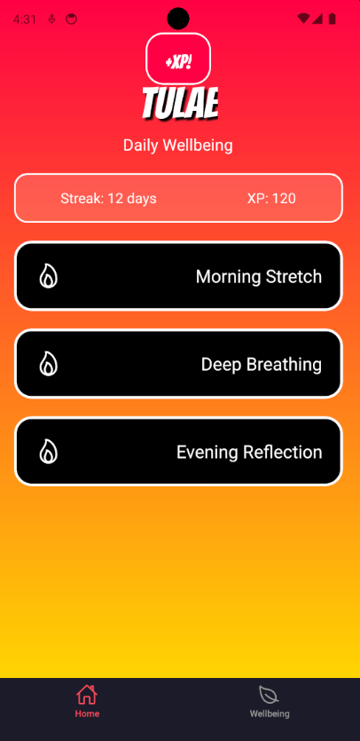

Tulae: Cross Platform Wellness App
Made with: React Native Firebase Express.js Node.jsAndroid StudioExpo
Tulae is a Duolingo-style wellness app using React Native, delivering daily workout and meditation routines with streak-based gamification. It Integrates in a Firebase backend to track user progress, authentication, and personalized data across iOS and Android devices. Along with designing a scalable database structure to store workouts, meditation logs, and performance insights for long-term habit formation. This is a personal project that I am very passionate with.